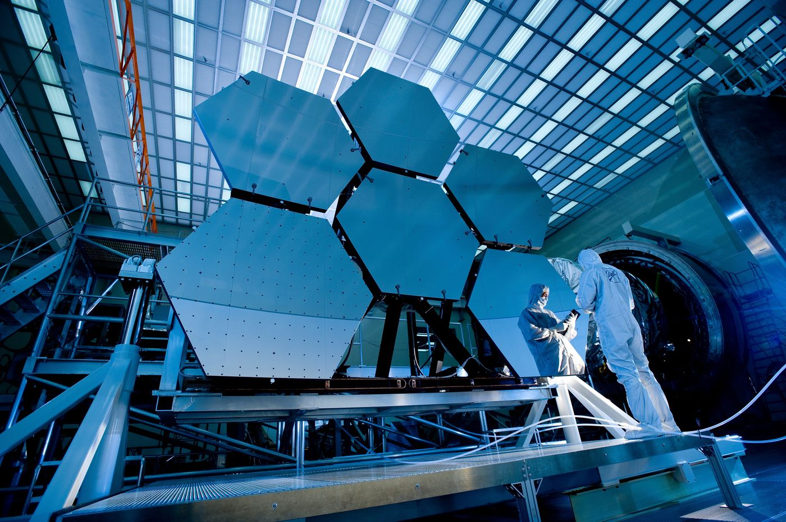

Case study
Recarlo Milan
Large architectural wall panels for the flagship Milan boutique — 2m × 3.9m per panel, recycled PET-G with milling and painting finish. High-finish luxury fabrication for UAE hospitality and premium retail.
View case study
Polymer LFAM
A multi-axis robotic arm extrudes polymer in precise layers — building facades, furniture, branded installations and lighting fixtures straight from a digital file. No mould, no formwork, no geometric constraint.
We primarily use recycled and bio-based materials including rPET-G, recycled polypropylene and PLA bioplastics. Build volume scales from a single statement piece to an entire floor fit-out.
Benefits
Design changes are file updates — no new tooling, no programme delay. Near-zero off-cuts because the robot deposits exactly what's needed.
Applications
Bespoke geometry, brand expression and programme speed define the brief.
Case study
Large architectural wall panels for the flagship Milan boutique — 2m × 3.9m per panel, recycled PET-G with milling and painting finish. High-finish luxury fabrication for UAE hospitality and premium retail.
View case study